Inventory accuracy
Medicine inventory needs to stay accurate, searchable and connected to batch, expiry and branch details.
POC
Select a POC to view its problem statements, solutions, tech stack and screens.
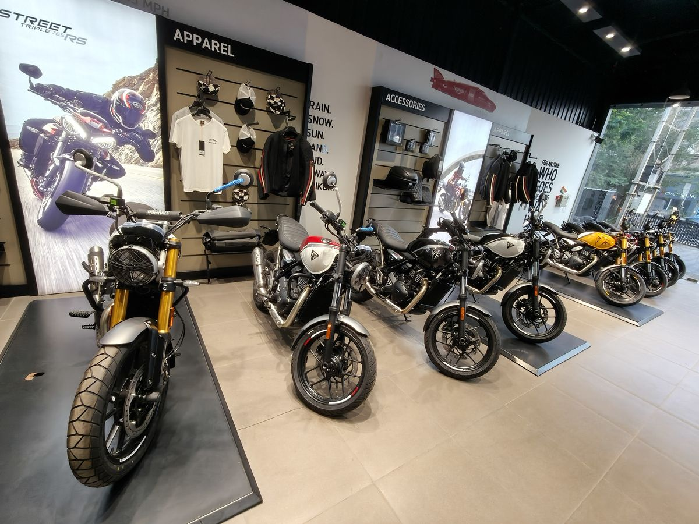
Moto StockDealership ERP for stock, invoices and stores. Deep Dive → GlamoraSalon management for appointments and clients. Deep Dive → DC CollegeAdmissions, courses, placements and enquiries. Deep Dive → DC Imports & ExportsGlobal trade, logistics and media presence. Deep Dive → DC Real EstateResidential discovery and project enquiries. Deep Dive →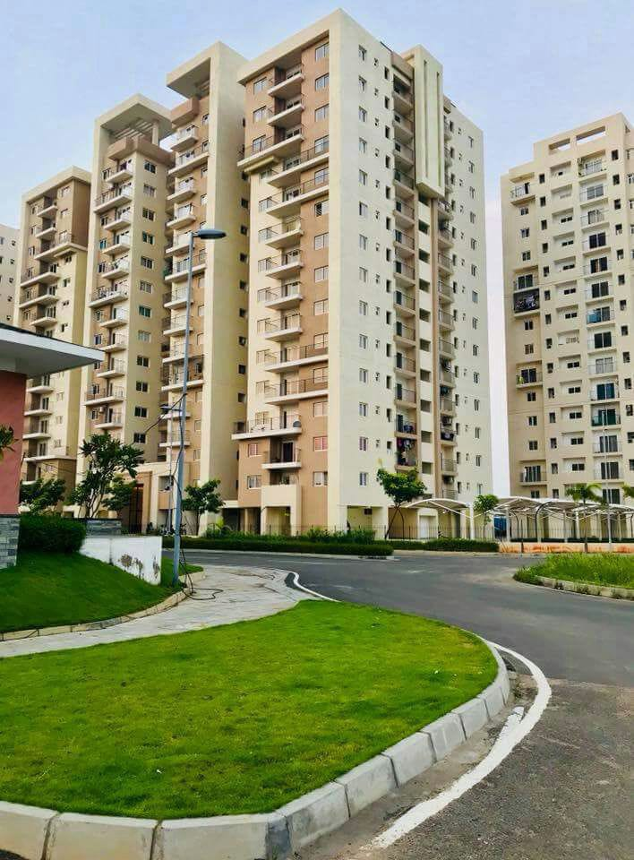
Ganesh ConstructionsConstruction operations and customer tracking. Deep Dive →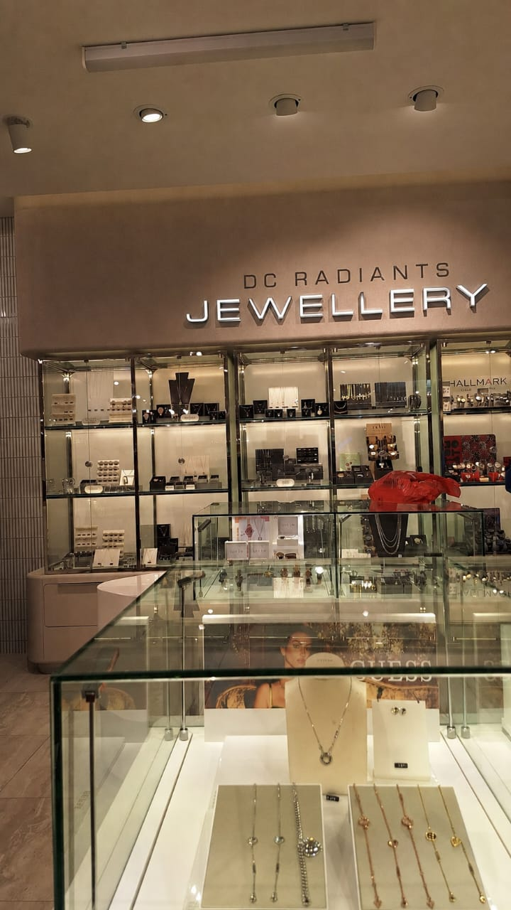
DC RadiantsJewellery inventory, sales and product discovery. Deep Dive → PhysiotherapyCare operations, schedules and business visibility. Deep Dive → SS DentalPatient records, appointments and clinic tracking. Deep Dive →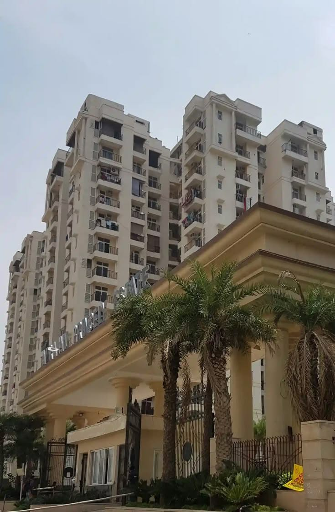
Sri Venkateswara ConstructionsProject tracking and construction visibility. Deep Dive → LuminaHotel bookings, guest services and operations. Deep Dive →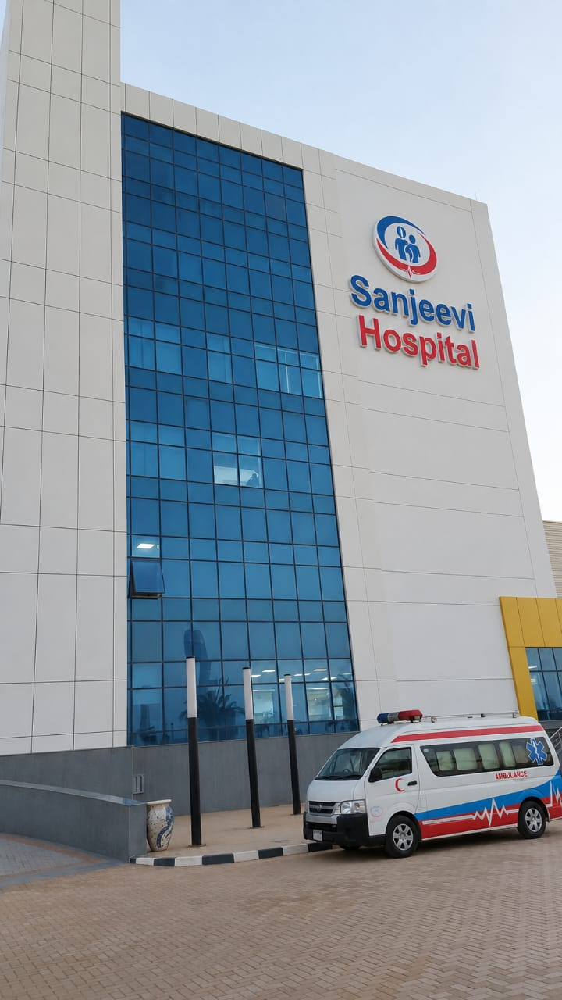
Sanjeevi HospitalsDigital health workflows and analytics. Deep Dive →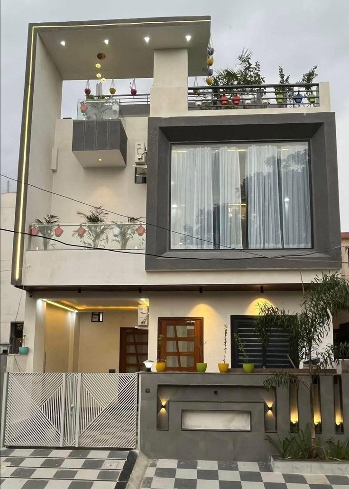
DC InteriorsInterior design approvals and project progress. Deep Dive → Sri Parasakthi PeetamSpiritual services, bookings and devotee engagement. Deep Dive →MediStock
MediStock is a pharmacy workspace for medicines, stock, purchases, billing, branches, reports and local operational control.
01
Medicine inventory needs to stay accurate, searchable and connected to batch, expiry and branch details.
Low-stock conditions need clear visibility before they disrupt sales or daily pharmacy work.
Billing, invoices, purchases, suppliers and branches are connected workflows that can become hard to manage separately.
Core pharmacy operations should remain usable when internet connectivity is unreliable.
02
Medicines, stock, purchases and sales are organized inside one structured operational app.
Dashboard and stock screens surface medicine counts, branch availability, pricing, expiry and low-quantity alerts.
Sales billing captures patient details, bill items, tax, discounts, payment method and refill scheduling.
SQLite keeps core pharmacy workflows available locally without depending on a web backend for daily operation.
03
04
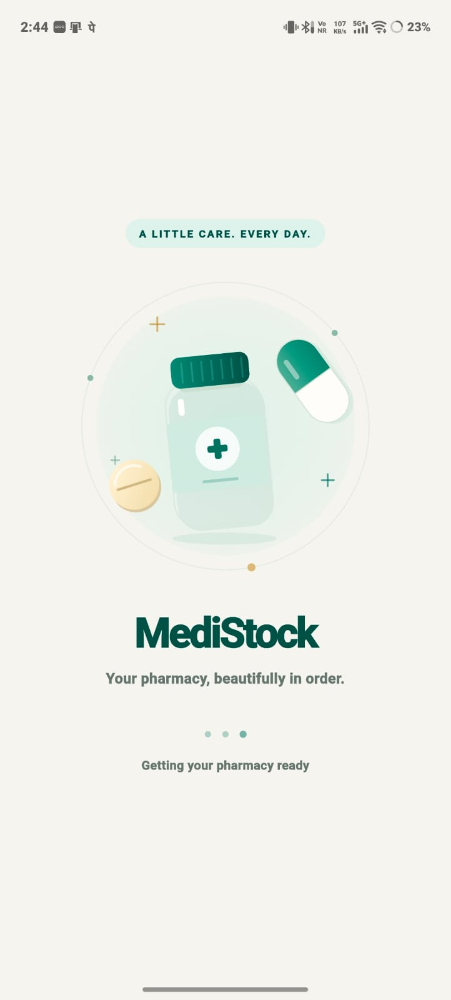
Introduces the MediStock brand before loading the local pharmacy workspace.
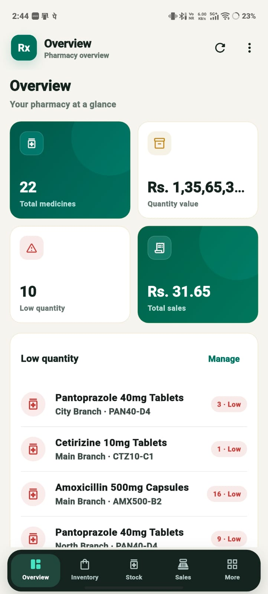
A pharmacy summary view for medicine count, quantity value, sales and low-stock alerts.
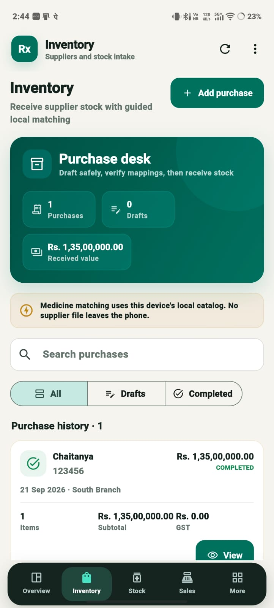
Tracks supplier purchases, drafts, received value and completed stock intake records.
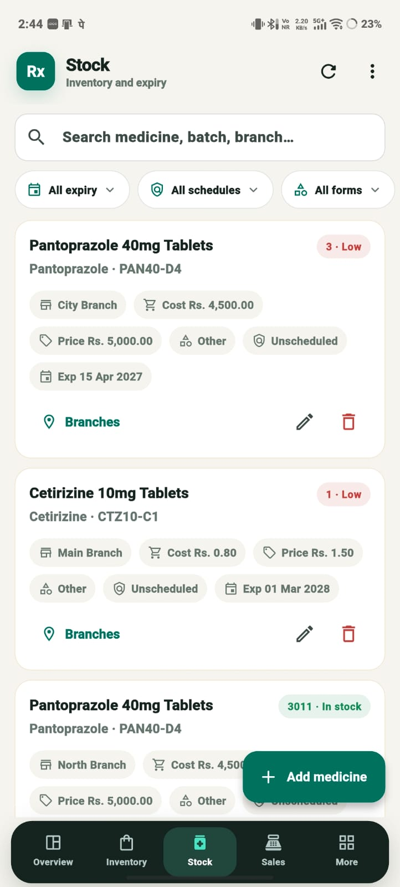
Searches medicine batches across branches while highlighting availability, price and expiry.
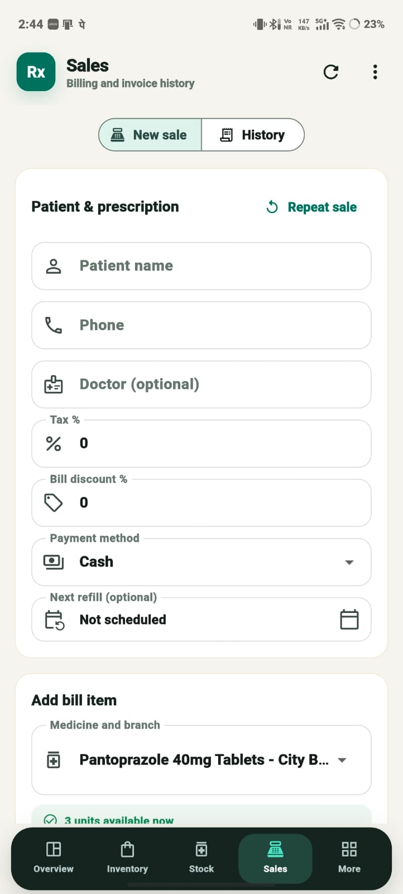
Captures patient details, payment method, discounts, tax and bill items in one flow.
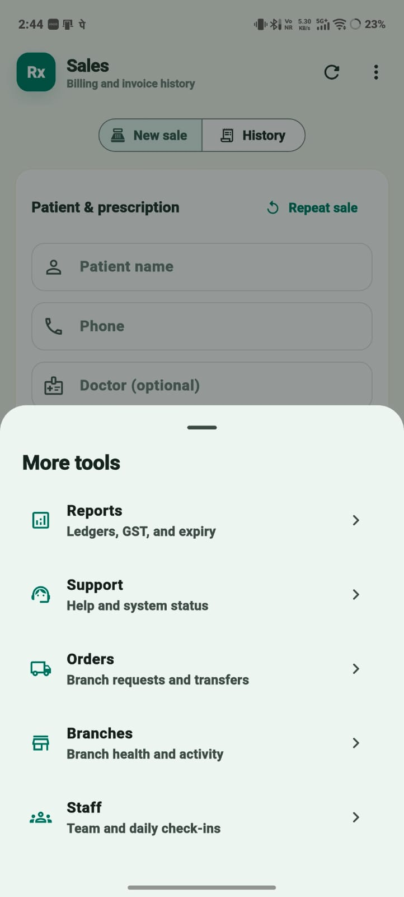
Groups reports, support, orders, branches and staff access from the More menu.
Moto Stock
Moto Stock is a showroom-focused mobile ERP concept for managing incoming bikes, customer invoices, outgoing sales and store-level visibility.
01
Dealership teams need a clear view of stock, sales and performance across multiple store locations.
Incoming bike inventory and outgoing sales need to stay connected through one workflow.
Sales teams need quick access to customer invoices, paid status, revenue and outstanding amounts.
Branch locations, staff count and bike counts need simple operational visibility.
02
Overview, Sales In, Bill, Sales Out and Stores screens create a clear operating path.
Sales In lists available bikes by showroom, category and stock status with intake access.
The billing screen captures vehicle sale details, customer data and supporting customer photo input.
The Stores screen groups showroom locations, staff and bike counts into one navigable list.
03
04
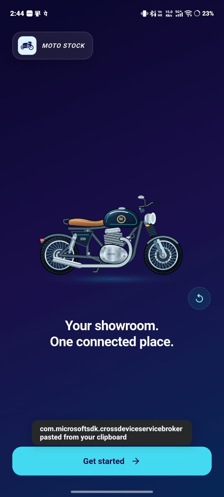
Introduces the showroom ERP as one connected place for dealership work.
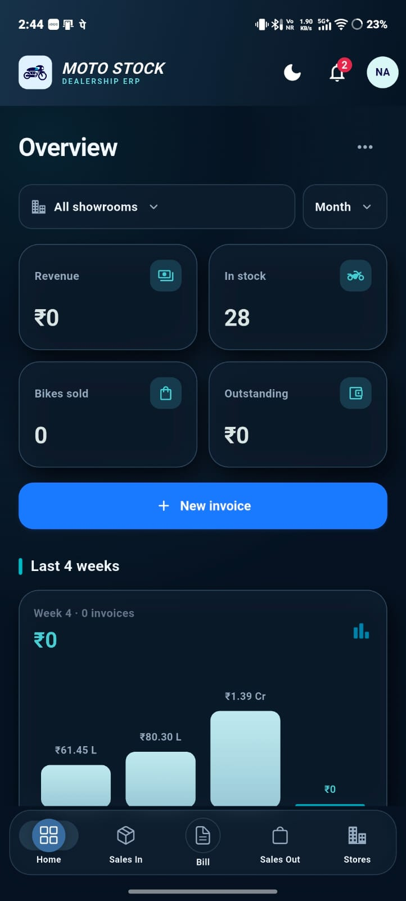
Summarizes revenue, stock, bikes sold, outstanding amounts and recent weekly performance.
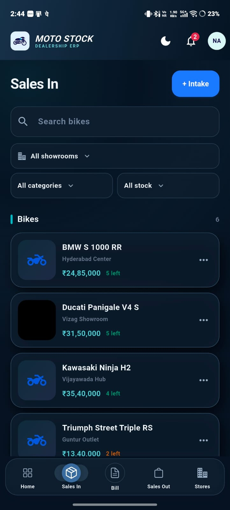
Lists incoming bike stock by showroom, category and availability with intake access.
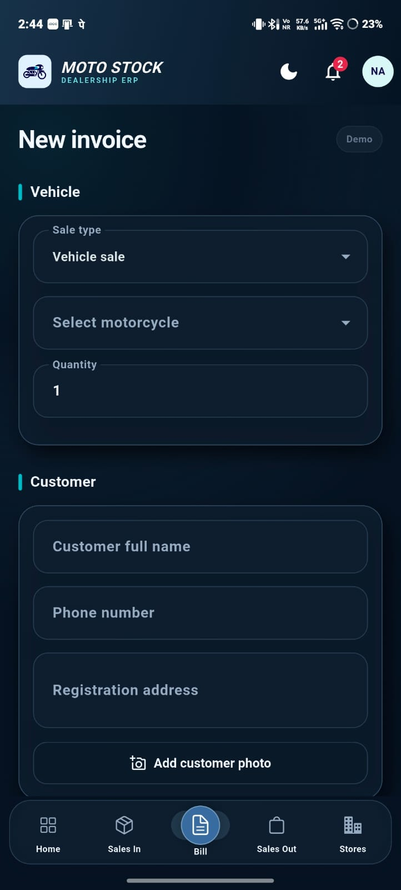
Captures vehicle sale details, customer information and supporting customer photo input.
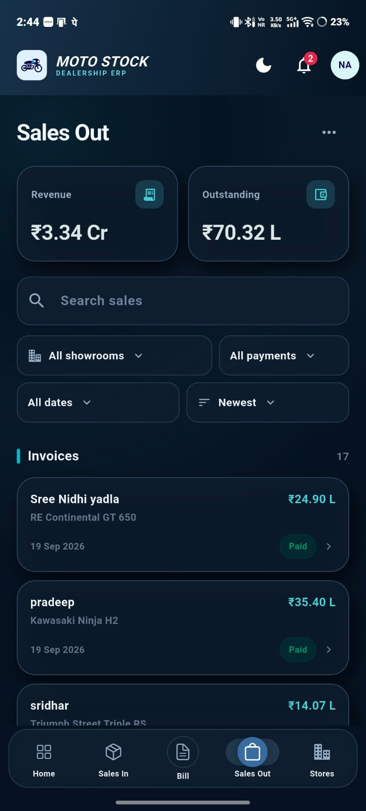
Tracks invoices, revenue, outstanding payments and filtered outgoing sales records.
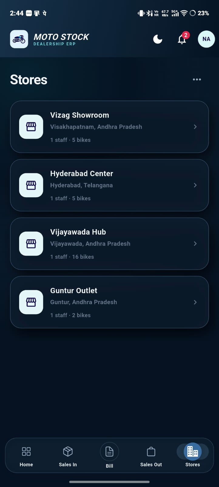
Shows branch locations, staff count and bike availability across dealership showrooms.
Glamora
Glamora is a smart salon management POC that brings appointment scheduling, client records, services, payments, inventory and admin operations into one mobile workflow.
POC Description
Admins can monitor appointments, revenue, pending payments, clients, VIP clients and daily salon activity.
The POC covers appointments, clients, services, employees, payments, reports, inventory and studio settings.
Client records track contact details, visit counts, loyalty XP, VIP status and service context.
The current prototype uses Flutter and Dart with local persistence for demonstrated app flows.
Logo
The supplied logo image gives Glamora a refined salon environment: warm lighting, mirrors, styling chairs and a service-focused studio mood that matches the app screens.
01
Customers may face waiting time and unclear service availability without structured appointment booking.
Salon teams often need to repeatedly collect preferences, service history and client details.
Appointments, employees, payments, service catalogues and inventory can become scattered across manual processes.
Owners need quick visibility into appointments, revenue, pending payments, clients and VIP activity.
02
Glamora supports appointment search, status review, service details, employee assignment and booking creation.
Client profiles maintain phone numbers, visits, loyalty XP, VIP status and add-client workflows.
Services are grouped by category with price, duration and capable-employee information.
Employees, service management, payments, revenue, reports, inventory and studio settings are grouped in one admin area.
03
04
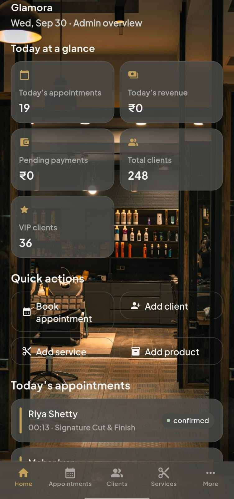
Shows daily appointments, revenue, pending payments, clients, VIP clients and quick admin actions.
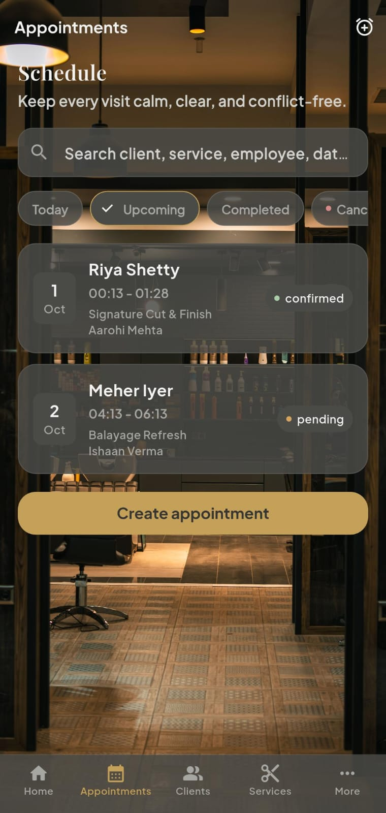
Searches visits, filters schedule status and creates salon appointments.
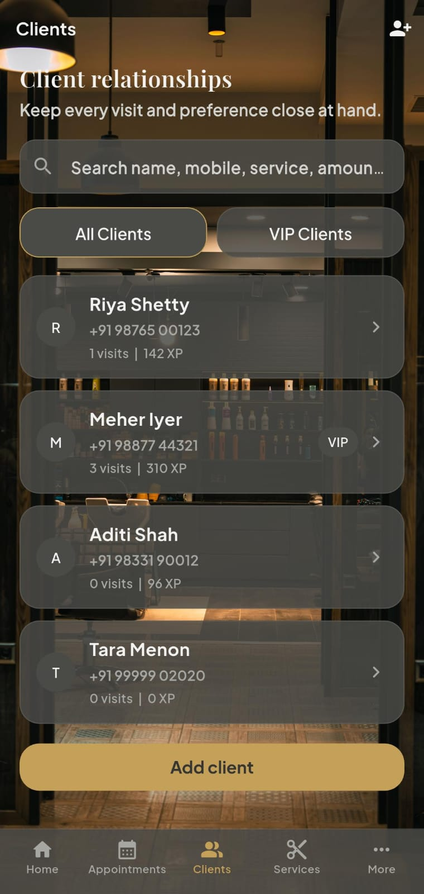
Maintains client contact details, visit count, loyalty XP and VIP status.
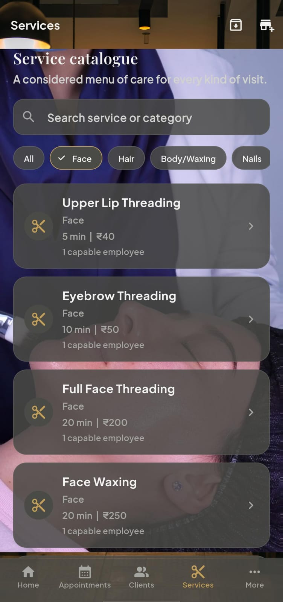
Lists salon services by category with price, duration and employee capability.
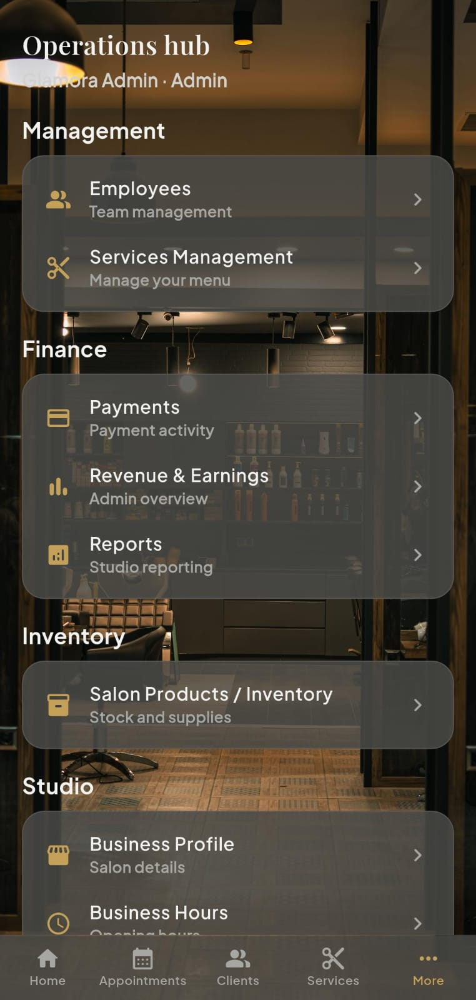
Groups employees, service management, finance, reports, inventory and studio settings.
DC College
DC College is a web experience that guides visitors through the institution, courses, admissions, placements and contact paths.
01
Prospective students need course, admission and enquiry information without moving through disconnected channels.
A college website must quickly communicate credibility, campus life and academic value to new visitors.
Students and parents need visible placement outcomes, partner information and career support details.
Admissions enquiries, campus visits, WhatsApp, email and directions need clear paths from the website.
02
The home screen presents DC College with a strong hero, course exploration and enquiry actions.
About, Courses, Admission, Placements, Life at DC and Contact are kept visible in the main navigation.
The admission screen frames the journey with course discovery, application steps and enquiry support.
Placement metrics, recruiting partners and direct contact cards help visitors evaluate next steps.
03
04
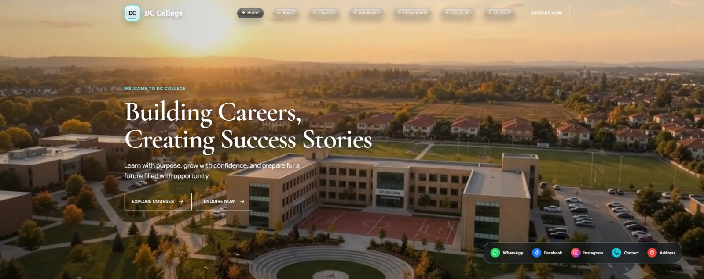
Introduces DC College with a campus hero, course exploration, enquiry CTA and social contact shortcuts.
Communicates the college story through a strong academic visual and institutional positioning.
Guides visitors from course discovery toward application steps and admissions support.
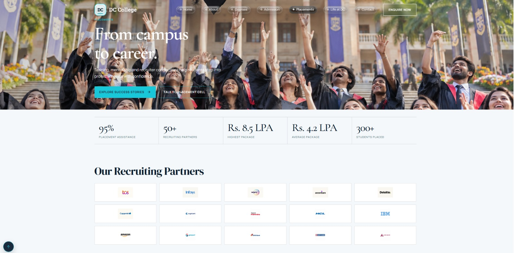
Highlights career outcomes, placement assistance, package metrics and recruiting partners.
Turns admissions interest into action with enquiry, visit, phone, email, WhatsApp and directions options.
DC Imports & Exports
DC Imports & Exports is a corporate website concept for presenting import, export, logistics, sourcing and trade coordination services with a polished global trade presence.
01
Import-export businesses need a focused website that clearly explains services, sectors and trade coordination value.
Visitors need quick access to services, facility information, careers, media resources and contact options.
Global trade conversations require a professional presence before detailed company proof and verified documents are shared.
Company history, facility details, media assets and certifications need organized sections that can accept approved content later.
02
The home screen introduces the company with port imagery, service CTAs and a polished global trade message.
About, Services, Facility, Careers, Media and Contact organize the website into clear visitor paths.
Dedicated facility and media pages provide space for logistics workflows, photos, videos, press, brochures and certificates.
Contact and service actions keep enquiry paths visible for trade conversations and business follow-up.
03
04
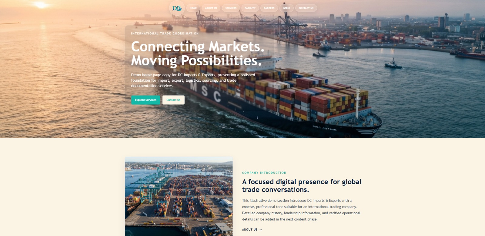
Introduces international trade coordination with service exploration and contact actions.
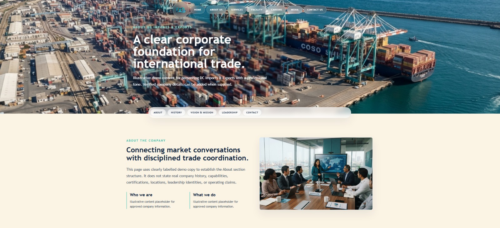
Frames the company foundation for international trade and approved corporate information.
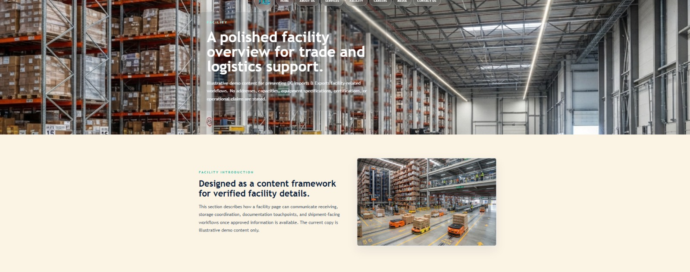
Shows a facility overview for logistics support, storage coordination and shipment workflows.
Presents trade coordination career opportunities and contact paths for applicants.
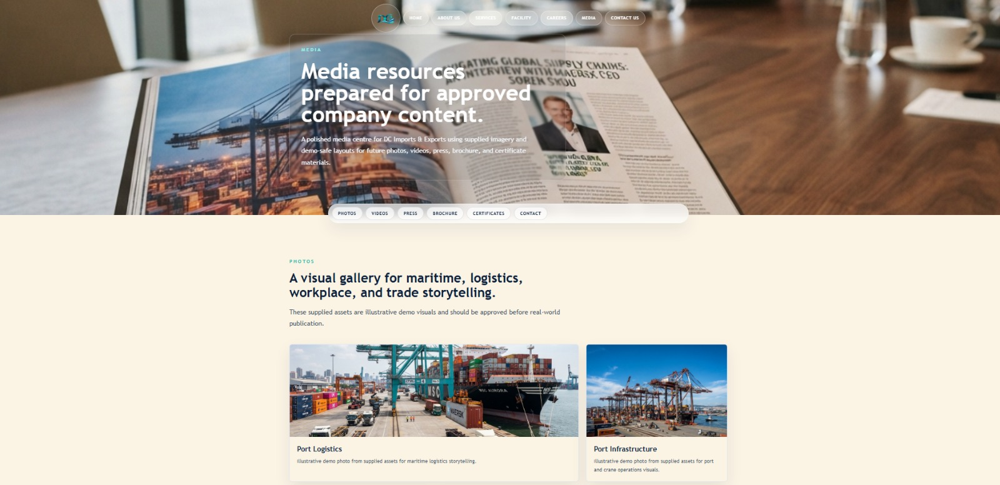
Organizes photos, videos, press, brochures and certificates for approved company content.
DC Real Estate
Godha Towers is presented as a residential real estate web experience for Yendada, Vizag, focused on homes, community, shared spaces and project enquiries.
01
Home buyers need a clear first impression of the residential address, location and project promise.
The project needs to communicate homes, shared spaces and everyday living as one cohesive residential story.
Visitors need quick access to tower count, floors, area scale and the broader project identity.
Potential buyers need a clear path to ask for current plans, pricing and availability information.
02
The home screen introduces Godha Towers with a calm residential message and a quote action.
The about screen frames a home as the beginning and community as the continuing value.
The project page highlights six towers, seventeen floors and more than fifty thousand square feet across clubhouses.
The contact screen guides visitors toward project information, mobile and email enquiry options.
03
04
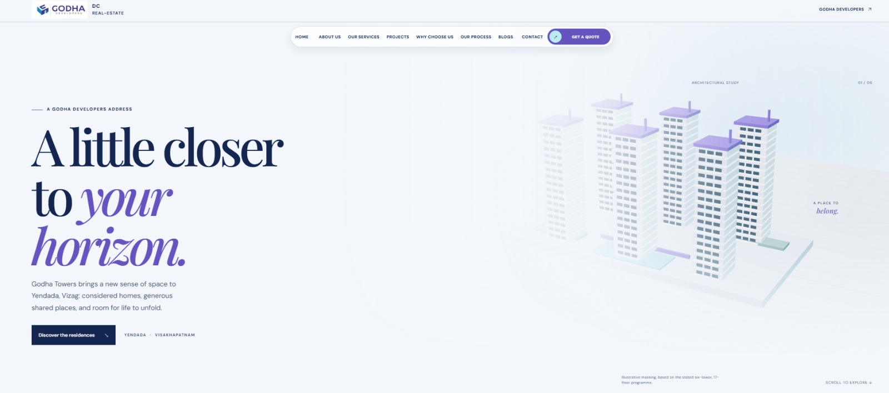
Introduces Godha Towers with the horizon message, location cue and residence discovery action.
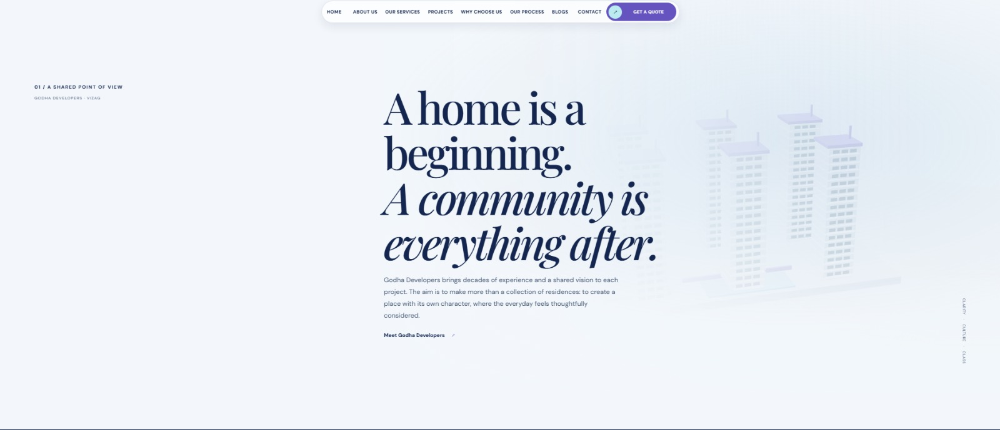
Frames home as the beginning and community as the long-term value after move-in.
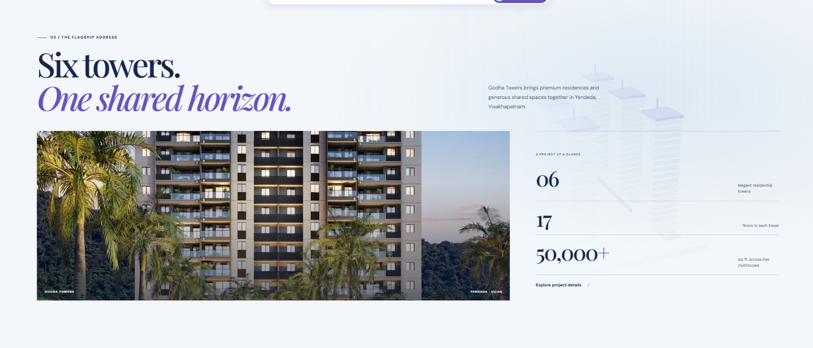
Shows six towers, shared horizon messaging and project-at-a-glance residential details.
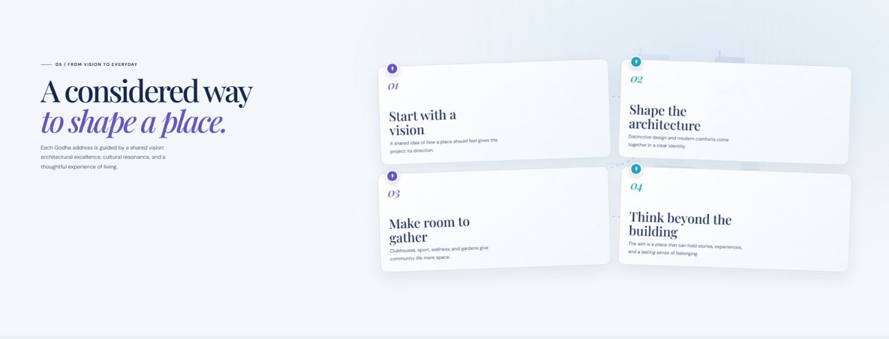
Explains the project thinking from vision to architecture, gathering spaces and belonging.
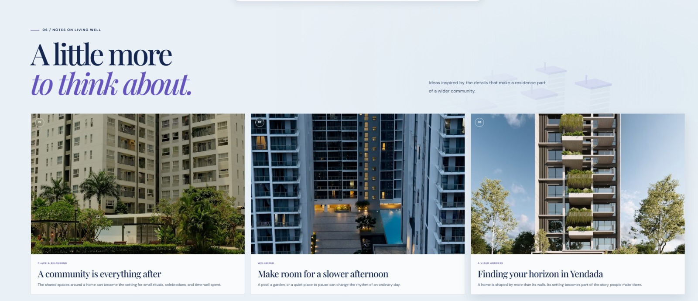
Presents community, wellbeing and living details through residence-focused story cards.
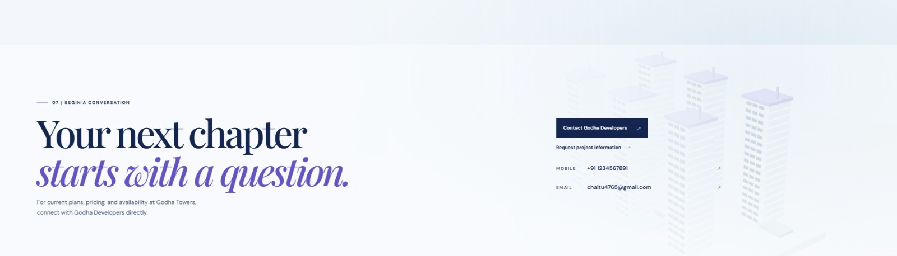
Converts project interest into direct contact for plans, pricing and availability.
Ganesh Constructions
Ganesh Constructions is a business website concept focused on reducing manual work, centralizing operational data and improving customer service visibility.
01
Businesses rely on manual data entry, spreadsheets and repetitive tasks, leading to delays and errors.
Customer information, sales, payments, documents and operational data are stored across different systems, making it difficult to manage.
Customers often have to contact businesses repeatedly to check order status, payments, documents or service updates.
02
Automated workflows, data management, approvals, notifications and routine operations improve efficiency and reduce manual work.
Business operations, customer data, documents, reports and transactions are handled in one secure platform with a unified dashboard.
Customers get a secure portal where they can track services, payments, documents, requests and real-time updates from anywhere.
03
04
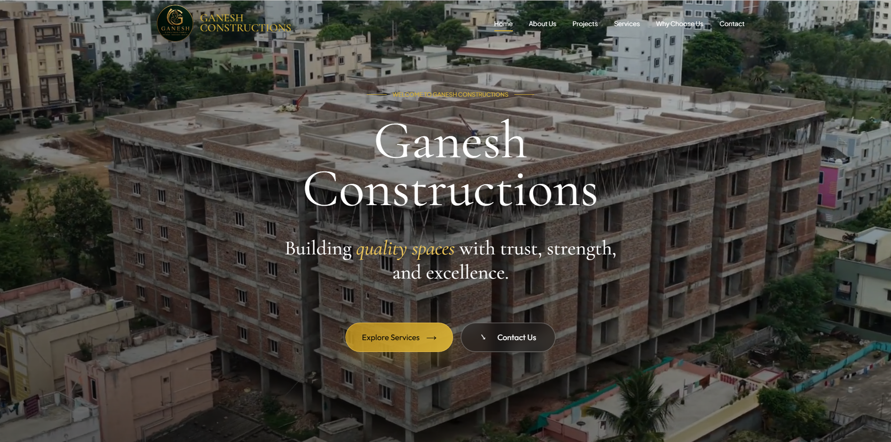
Introduces Ganesh Constructions with the main hero, navigation, service CTA and contact action.
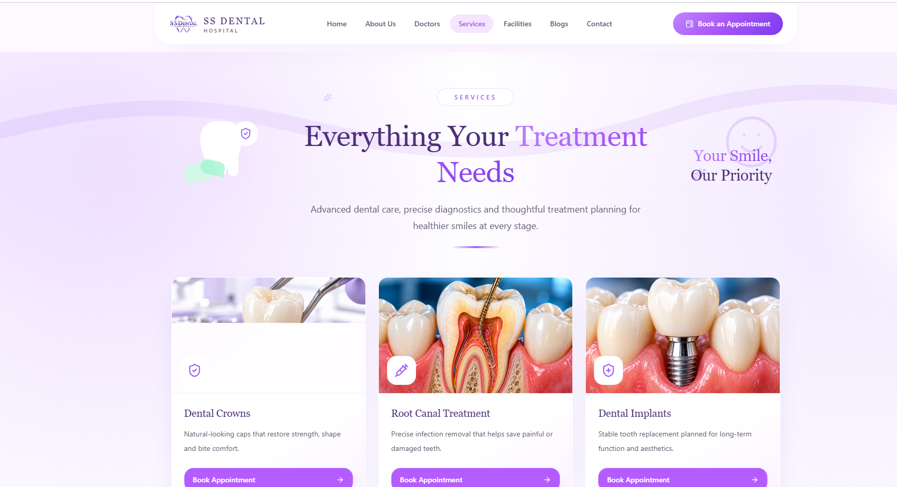
Presents company background, trust points, experience and project quality indicators.
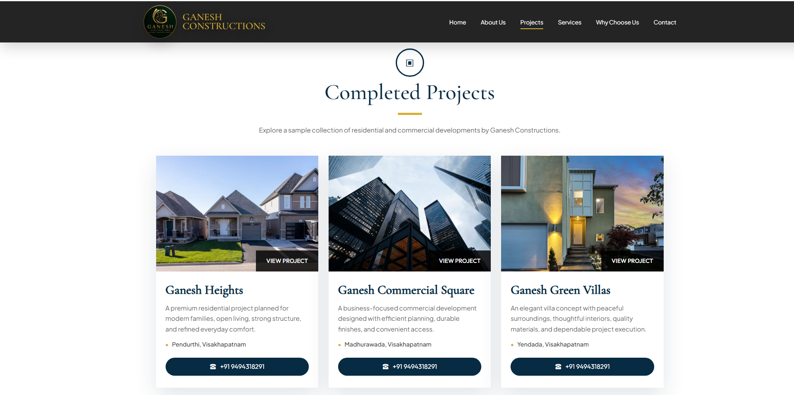
Shows completed residential and commercial projects with locations and enquiry contact actions.
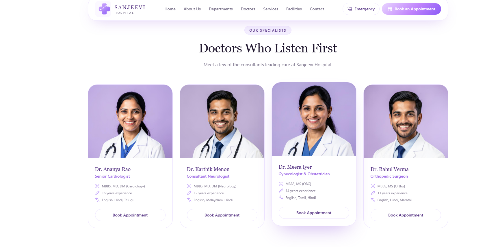
Details residential construction services with support from planning to final handover.
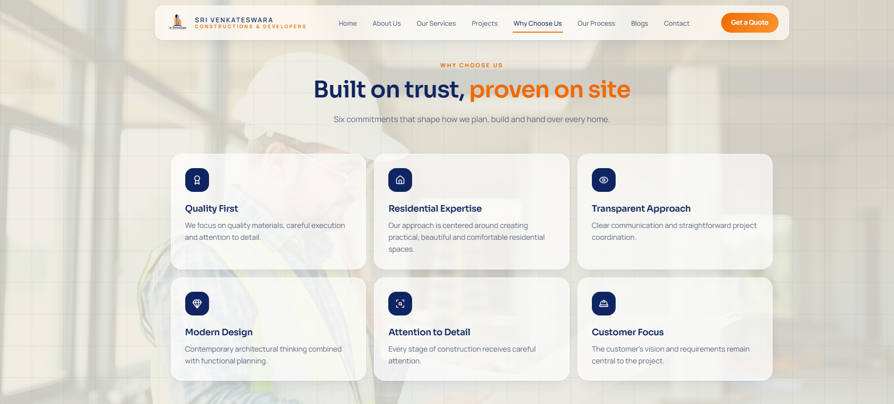
Highlights construction quality, experience, planning, delivery, satisfaction and safety standards.
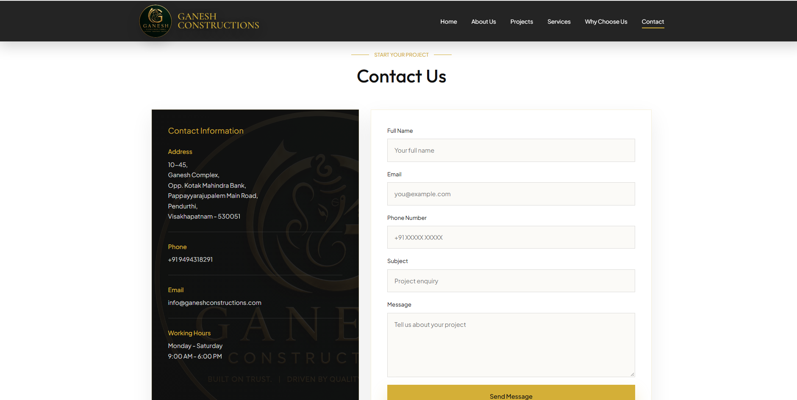
Provides address, phone, email, working hours and a project enquiry form.
DC Radiants
DC Radiants is a jewellery platform concept for inventory, customer management, billing, orders and guided product exploration.
01
Businesses handle sensitive customer information, purchase records, transactions and valuable inventory that require strong security.
Managing diamond inventory, customer details, orders, billing and sales through separate or outdated systems makes operations difficult to track.
Customers cannot easily explore detailed diamond information, compare products, visualize jewellery or receive personalized recommendations before purchase.
02
Secure authentication, role-based access, encrypted data, backups and monitoring protect customer and business information.
Inventory, customer management, sales, billing, orders and reporting are connected in one digital platform.
Customers can explore diamonds and jewellery, view specifications, compare products, receive recommendations and request consultations digitally.
03
04
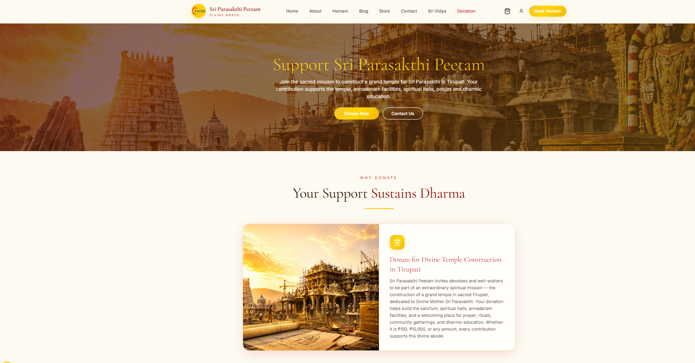
Introduces the jewellery and mall experience with the main hero and collection actions.
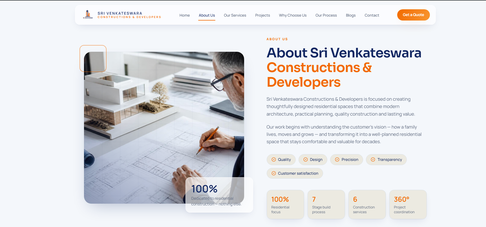
Displays signature jewellery categories including rings, earrings, necklaces and pendants.
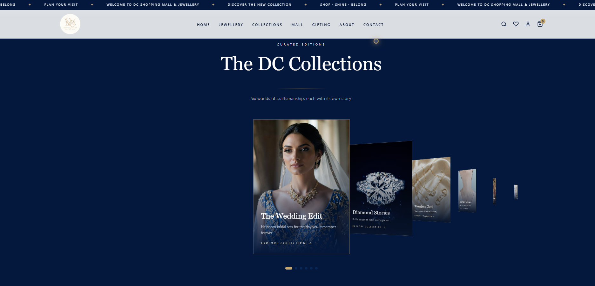
Showcases curated jewellery editions with carousel-style collection discovery.
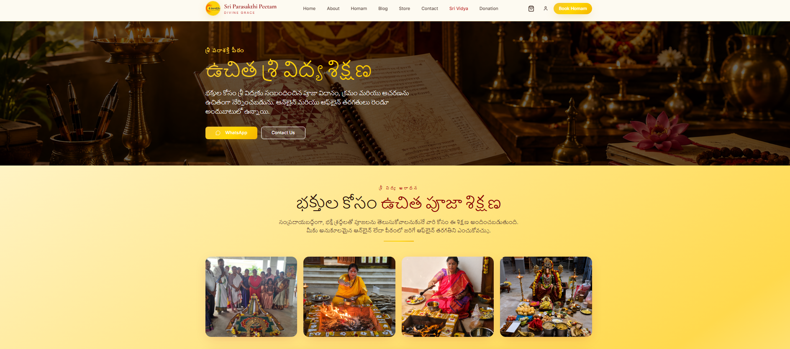
Organizes jewellery discovery around celebrations such as wedding, engagement, anniversary and birthday.
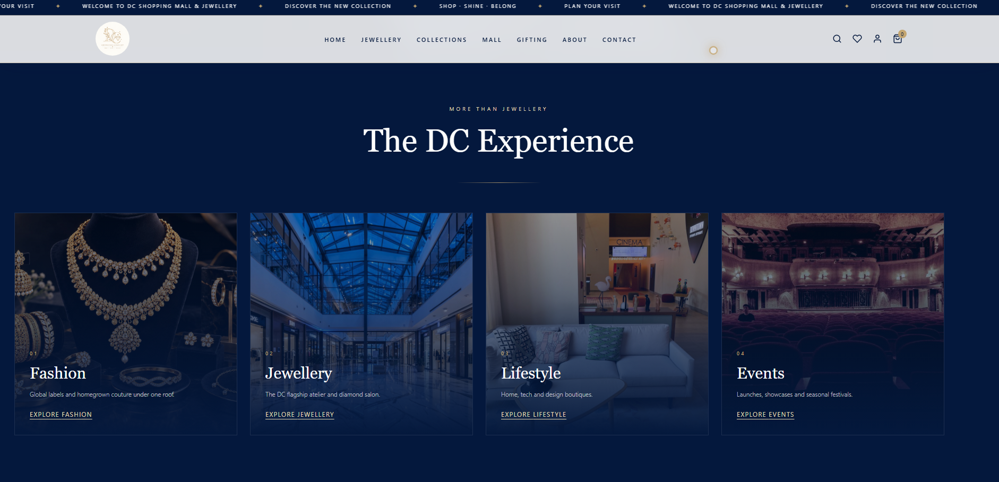
Presents the wider DC experience across fashion, jewellery, lifestyle and events.
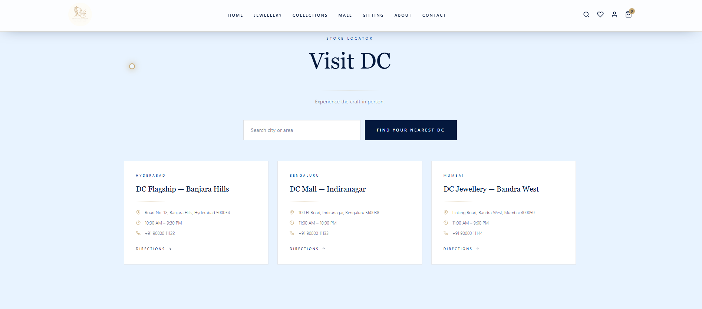
Provides store locator search and branch cards for in-person visits.
Physiotherapy
Physiotherapy is a healthcare business platform concept for centralizing information, task workflows and operational visibility.
01
Managing business data, customer information and operations across different systems is time-consuming.
Manual follow-ups, task management and communication can cause delays and missed opportunities.
Limited visibility into projects, employee performance and business operations makes decision-making difficult.
02
Centralized data enables companies to store information, customer data, documents and day-to-day operations in one place.
Task, schedule, reminder and alert management is simplified to increase work efficiency.
Users get real-time access to projects, worker progress, business performance and other crucial data.
03
04
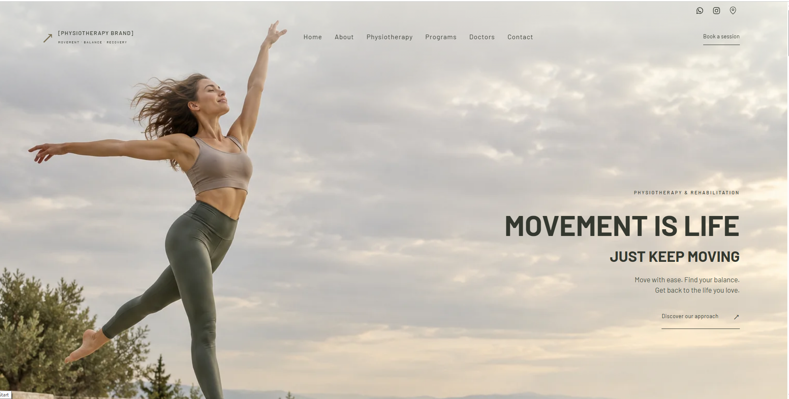
Introduces the physiotherapy brand with the movement-focused hero and session action.
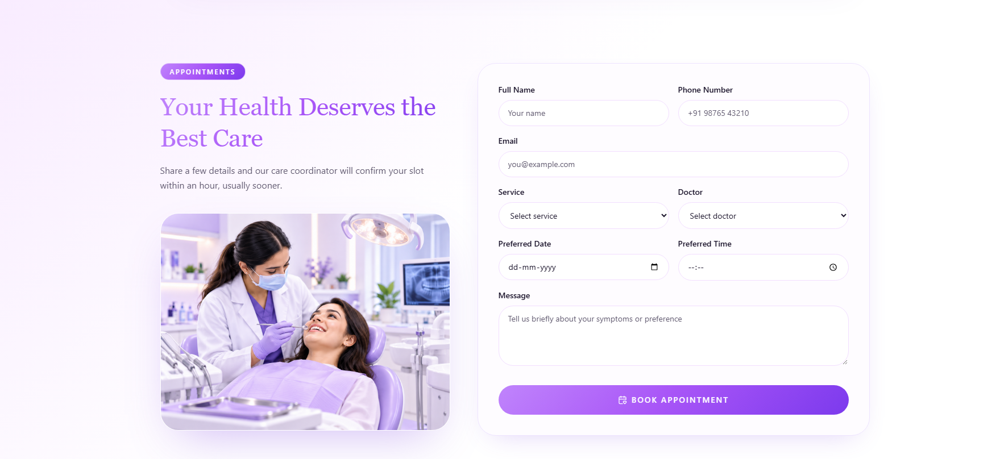
Shows therapy service content for body balancing, deep tissue care and aromatherapy.
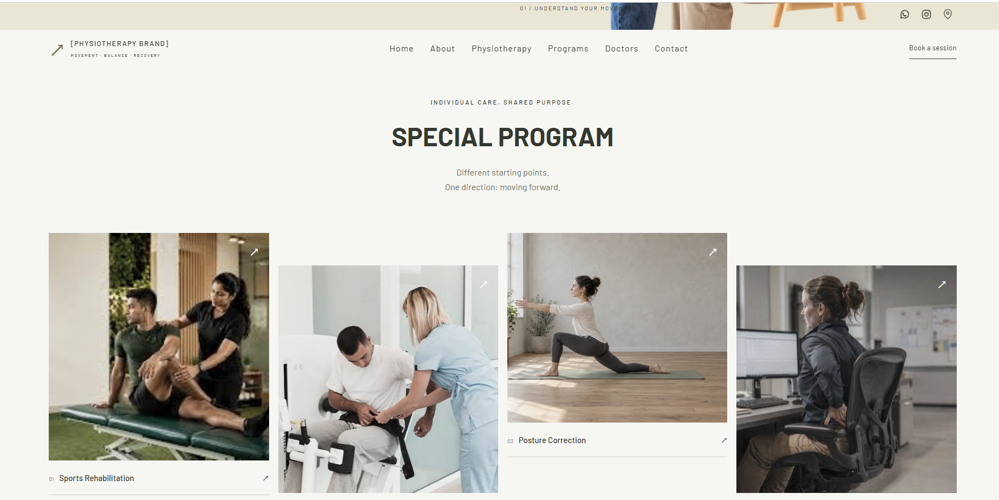
Presents special programs such as sports rehabilitation, posture correction and workplace movement support.
Provides contact options for calls, WhatsApp and social follow-up.
SS Dental
SS Dental is a healthcare website concept for treatment records, appointment workflows and operational tracking.
01
Patient records and treatment details are difficult to manage efficiently.
Manual appointment scheduling can lead to delays and missed follow-ups.
Limited visibility into patient progress and hospital operations affects efficiency.
02
An integrated Patient Management System centralizes patient records, treatments and diagnostic reports.
A Smart Appointment System manages bookings, schedules, reminders and notifications.
A Real-Time Healthcare Dashboard tracks patient progress, appointments and hospital operations.
03
04
Introduces SS Dental Hospital with the hero, emergency care cue and appointment action.
Presents compassionate care, advanced medicine and patient confidence metrics.
Shows specialist doctor profiles with credentials, experience and appointment actions.
Highlights treatment services such as crowns, root canal treatment and dental implants.
Provides appointment booking fields for patient details, service selection, doctor, date and time.
Sri Venkateswara Constructions
Sri Venkateswara Constructions is a construction management concept for projects, documents, budgets and customer progress updates.
01
Managing project details, customer information and construction documents across different processes can be difficult.
Manual tracking of project stages, budgets and construction activities can cause delays and communication gaps.
Customers have limited real-time visibility into project progress, updates and completion status.
02
An integrated Construction Management System centralizes projects, customers, documents, budgets and construction activities.
A Real-Time Project Tracking System monitors planning, design, estimation, construction, quality checks and handover.
A Customer Portal provides project updates, progress tracking, documents and communication in one platform.
03
04
Introduces Sri Venkateswara Constructions with project positioning, CTAs and trust cards.
Presents company positioning, residential focus, quality markers and project coordination metrics.
Shows residential construction services for independent houses and villa homes.
Highlights planned and built homes with featured, completed and ongoing project filters.
Explains the commitments behind quality, expertise, transparency, design, detail and customer focus.
Shares construction guidance on planning, design and material selection for better homes.
Provides consultation request form and contact options for residential construction enquiries.
Lumina
Lumina is a hotel management concept for bookings, guest information, room availability and service coordination.
01
Fragmented management of bookings, guest information, room availability and hotel services reduces operational efficiency.
Manual handling of guest requests and service coordination causes delays and communication gaps.
Limited real-time visibility into hotel operations makes it difficult to monitor service performance and guest activity.
02
An Integrated Hotel Management System centralizes bookings, guest data, room availability and hotel operations.
A Smart Guest Service System automates service requests, notifications and communication.
A Real-Time Operations Dashboard monitors room status, guest activity, service requests and overall performance.
03
04
Introduces Lumina with the luxury resort hero, stay CTA and exploration action.
Shows quiet retreat room options including deluxe rooms, premier rooms and Lumina suites.
Presents the dining experience with a taste of Lumière and memorable hospitality.
Shows a visual glimpse of the escape through pool, room and restaurant imagery.
Provides reservation CTA, contact details, social links and newsletter signup.
Sanjeevi Hospitals
Sanjeevi Hospitals is a digital health platform concept for patient records, appointments, departments and operational analytics.
01
Patient information was scattered across different records, making it difficult to access complete medical history quickly.
Lack of coordinated digital workflows between patients, doctors, appointments and departments created operational delays.
Limited visibility into patient care activities and healthcare operations made real-time monitoring and decision-making difficult.
02
A Unified Digital Health Platform centralizes patient profiles, medical history, reports and treatment information.
An Integrated Healthcare Workflow System connects patients, doctors, appointments and departments through a single platform.
A Real-Time Healthcare Analytics Dashboard monitors patient care, appointments, department activity and operational performance.
03
04
Introduces Sanjeevi Hospital with emergency care, appointment actions and trust metrics.
Presents compassionate care, advanced medicine and hospital care metrics.
Shows specialised departments including cardiology, neurology, orthopedics and emergency care.
Displays consultant profiles with specialisations and appointment actions.
Highlights treatment support including emergency care, diagnostics, laboratory and pharmacy.
Shows infrastructure including wards, intensive care, diagnostics, pharmacy and emergency areas.
Provides appointment booking fields and emergency attention contact actions.
DC Interiors
DC Interiors is a studio platform concept for managing design concepts, approvals, materials and execution progress.
01
Design concepts, client requirements, material selections and project data were difficult to manage through disconnected processes.
Coordination between designers, vendors and site teams created workflow gaps and project delays.
Clients lacked a centralized way to track design approvals, project milestones and execution progress.
02
A Digital Design Intelligence Hub manages client requirements, concepts, materials, approvals and project data in one system.
A Connected Project Collaboration Engine streamlines communication between designers, vendors and site teams.
An Interactive Project Visibility Portal provides milestone updates, approval tracking, design revisions and execution progress.
03
04
Introduces DC Interiors with the hero, project actions and design approach panel.
Presents the studio profile, project count, experience and city presence.
Shows residential, commercial, architecture, space planning, furniture and turnkey services.
Provides project enquiry fields and contact actions for interior design leads.
Sri Parasakthi Peetam
Sri Parasakthi Peetam is a spiritual services platform concept for Homam bookings, devotee information, donations and community updates.
01
Managing Homam bookings, devotee details, donations and spiritual services through separate processes created operational gaps.
Devotees had limited access to personalized spiritual services, schedules and guidance through a centralized digital system.
Managing spiritual content, updates and devotee engagement manually made consistent communication difficult.
02
An Integrated Spiritual Services Platform manages Homam bookings, devotee information, donations and services digitally.
A Personalized Devotee Engagement System provides service information, spiritual guidance, Homam details and digital interactions in one place.
A Digital Content and Community Hub manages spiritual blogs, updates, schedules and ongoing devotee engagement.
03
04
Introduces Sri Parasakthi Peetam with deity visuals and Homam, donation and story actions.
Presents the divine spiritual center, Vedic rituals and personalized spiritual practices.
Shows sacred Homam services with fire ritual positioning and booking action.
Shares spiritual blog posts with devotional stories, wisdom and sacred traditions.
Presents Sri Vidya Diksha content with ritual images and spiritual learning context.
Provides donation messaging, temple support context and donor action prompts.